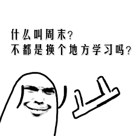

离明年考研还有1年一个月，但我总是静不下心来看看书。
在寝室里，室友还总是在打游戏，我很难静下心来看看书，打打代码，记记博客还是没什么问题的，说实话我还是很容易受到干扰的，难以静下心来从书上学点新的知识。
而且就算开始了，也还是会有放弃的念头不经意跑出来，想着干嘛要考研呢，看那些枯燥的书本，还不如快快乐乐学点技术，然后马上就出去找实习单位了。
虽然我也不知道到底哪个对我来说更适合，就像当年高考填志愿，我也不知道我的兴趣是什么，更不知道哪个专业适合我，但我还是一股脑全部填了计算机的专业，而且不接受调剂。
既然做出了决定，就好好努力吧，
上次有个讲座，上面的老师问道何为努力：或许就是逼自己做自己不愿意做的事。
之前java老师也说过，如果你一直写让你很舒服的代码，你是不会进步，只有写那些让你很难过的代码才能让你有进步。
我知道考研很难，很辛苦，在此也祝愿那些考研的同学都能心想事成！！！
也祝愿自己能够坚持下来，不忘初心
